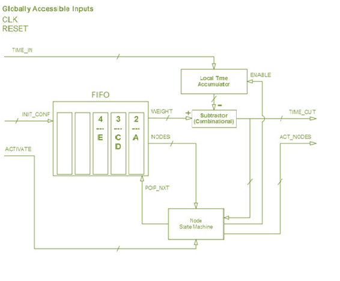

Shortest Path Algorithm that improve FPGA use
About
This paper outlines the transformation of events, development, reproduction, and land use of
FPGA (Xilinx Spartan-3E X3S500E) the use of other NSSP equivalent calculations (one source
of very limited method with loads of non-contradictory edges). Its operating time has a high O-m
(min (n, ε)), and uses mechanical properties in the O (m) application, a good place to guess. It
has been used in standard bench extraction cases and its presentation is comparable to the use of
the fast-paced wide-ranging cases of Digital - O (m + n log n) calculations. In the case of
practical problems, a calculation of the required deflection is required in the application for clock
cycles repeated 200-300 times. The use of mechanical devices is completely unchanged, and the
paper proposes the design of a second-year chip, which, when made, will allow the gadget to
produce mechanically and reproduce continuously. The general flexibility of the chip combined
with its capacity and flexibility makes it understandable in the broad integration of the research
center and field conditions.
In addition, the basic calculation is the result of another global equity analysis, which will
be called "delayed acceleration" because it depends on the control and recording speed of the
equally increasing signals in an organization. This global perspective tends to address a wide
range of issues that are far more serious than roadmap, including the NP-complete subset
aggregate and Hamiltonia road issues. A quick plan to address the first of these problems is
developed as part of this work and is proposed immediately in the discussion.
Introduction
Finding the briefest ways between focuses on a diagram is one of the most major and
generally pertinent streamlining issues in software engineering. Legitimately or as subproblems,
briefest way issues are fundamentally significant in fields going from network steering to selfsufficient framework control to computational science to installed framework plan [1], [2], [3]. As
often as possible, the speed with which most brief way issues can be settled limits the pace of a lot
bigger activities.
Past investigation of the briefest way issue has to a great extent been restricted to successive
calculations and, all the more as of late, equal calculations executed on universally useful models [4],
[1]. Be that as it may, the previous are confined by an upper bound of O(m + nD)1 [5], and endeavors
at the last either are just material to explicit occurrences of the issue, or parallelism corrupts as issue
size increments. Moreover, completely fledged central processors are cumbersome and costly – this
renders enormous scope parallelism unreasonable for some applications.
The presentation of FPGAs (Field-Programmable Door Clusters, See Area 1.2) [6] now gives
a stage to ease, enormously equal handling. As of late, various VLSI (Enormous Scope
Incorporation) answers for the briefest way have been proposed, yet their intricacy (time and
additionally space) is substandard compared to that of calculations actualized on broadly useful
structures. In addition, their real exhibition against standard benchmarks has not been not broadly
contemplated.
This paper portrays the turn of events, advancement, reproduction, and handy FPGA (Xilinx Simple
3E X3S500E) execution of another, greatly equal calculation to understand the NSSP (single source
most limited way issue with nonnegative edge loads). Its run time has an upper bound of O(min(n,
ε)),2 and it utilizes equipment assets on the request for O(m), the hypothetical ideal. It was applied to
standard benchmark issue occurrences [5] and its presentation was contrasted with that of the
quickest broad case execution of Dijkstra's calculation – O(m + n log n) [7]. For handy occurrences
of the issue, the proliferation postpone calculation needed on the request for multiple times less clock
cycles. The equipment execution accomplished is completely adaptable, and this paper subtleties a
second-age chip engineering which, when actualized, will make the gadget proficiently issue
reconfigurable continuously. The moderately ease of the chip joined with its capacity and adaptability
make it comprehensively material in a wide assortment of lab and field circumstances.
Additionally, the hidden calculation is the result of another equal processing worldview, which will
be named "quickened proliferation delay" since it depends on controlling and recording the overall
speed of signs engendering in equal through an organization. This worldview is generalizable to
tackle different issues that are considerably more computationally serious than pathfinding, including
the NP-complete subset entirety and Hamiltonian way issues [10]. A quickened plan to tackle the first
of these issues was created as a feature of this venture and is proposed quickly in the conversation.
Field-Programmable Gate Arrays (FPGAs)
Field-programmable entryway exhibits, or FPGAs, are reconfigurable, programmable
rationale gadgets that effectively take into consideration equal preparing. They comprise of a variety
of configurable rationale blocks (CLBs) wired together by means of a bunch of programmable
interconnect modules. By utilizing the way that all combinational rationale can be spoken to as a
Boolean aggregate of items, these gadgets accomplish equipment proficiency even while holding the
capacity to be customized to speak to almost any synthesizable advanced microcircuit.
Shortest Path Problems: Feormal Definition
There are many classes of shortest path problems. Although the algorithm described in
this paper can be generalized to solve other instances, this paper focuses on its performance in
resolving the single source shortest path problem with non-negative edge weights, or NSSP. The
NSSP is easily understood in terms of the single pair shortest path problem (SPSP), the general
problem of finding a path from one node of a graph to another such that the sum of the weights
of its constituent edges is minimal. Rigorously, given a weighted, directed graph G = (V, E) (that
is, a set V of vertices and a set E of edges), a real-valued edge weight function : E → R, and
one vertex s V, the SPSP seeks a path P from s to some vertex v V such that the following
expression (“length” of path P) is minimized
The NSSP extends this: it seeks the shortest paths between a source node s and every
vertex v of the graph. The solution is typically represented with a shortest paths tree (SPT). The
SPT of G is defined to be a spanning tree rooted at s such that the reversal of any path v to s is a
shortest path from s to v. Also, NSSP restricts the range of to nonnegative real numbers.
Prior Research
Of the numerous consecutive strategies to understand the NSSP, Dijkstra's calculation [7] gives the
best broad case execution (amortized run season of O(m + n log n) when actualized with a Fibonacci
stack) [4], [5]. Thus, it is at present the standard calculation utilized to tackle briefest way issues that
emerge in numerous fields (quite, it is utilized by the OSPF network steering convention) [1].
Because of its pervasiveness, numerous endeavors have been made to beat it.
As of late, different equal ways to deal with the NSSP have been proposed [1], [2], [9] and some
were exhibited to perform in a way that is better than Dijkstra's calculation. This paper depicts the
improvement of one such strategy, in light of the worldview of spread deferral. Despite the fact that
the worldview and technique were made autonomously throughout this undertaking in 2009, ensuing
writing search uncovered that different examiners, obviously obscure to each other, hit upon specific
parts of a similar methodology somewhere in the range of 2006 and 2008.
Prasad et al. portrayed NATR, a FPGA-based most limited way arrangement [9]. The calculation
they inferred is consistently like the non-quickened rendition of the spread defer calculation
introduced beneath, so much of the time it requires altogether more clock cycles than the quickened
adaptation of this calculation (execution is O(ε) versus O(min(n, ε)) for NSSP).
Ishikawa et al. [1] showed up at a calculation that is, in the theoretical, equal to the
quickened engendering defer procedure set forth in Segment 2.3, yet they executed it in an
alternate structure on a broadly useful equal DAPDNA-2 processor rather than a FPGA. Their rationale required the age of a n by n grid circuit, and their elevated level equipment stage had
just had a predetermined number of preparing components (376), so they needed to separate the
issue into sections at that point recombine the outcomes. In this manner, their usage was less
equipment proficient (O(n2) instead of O(m)), not so much versatile, but rather more costly.
Oltean et al. perceived the overall idea that numerous troublesome computational issues
can be comprehended by investigating deferred signals. They utilized it to assemble gadgets
that pre-owned deferrals in engendering of light through fiber optics to tackle certain NPcomplete issues (counting subset entirety, Hamiltonian way, and accurate spread) [10]. These
executions have significant functional constraints in any case (e.g., hard to reconfigure, no
increasing speed conceivable)
Parallel, Propagation-Delay Algorithm for Shortest Path
Propagation Delay
The overall worldview of spread postpone considers a diagram as an organization
through which a sign may penetrate, beginning at a source hub (or hubs in certain applications).
The sign's engendering through each edge of the chart is deferred by a sum relative to the edge's
weight. In plot structure, the worldview is: (1) Express the issue (in the theoretical) as a
weighted diagram. (2) Start a sign at a specific hub (or different hubs for certain applications),
and permit it to engender through hubs making some record of sign landings in every hub from
each edge. (3) Examine recorded appearance data to tackle the issue. As often as possible, it is
important to follow the movement of the sign in reverse through the chart to discover the
appropriate response.
Subtleties of the structure of every individual issue can be utilized to advance execution.
All in all, since postponed signals are not consecutively subordinate upon each other and are
handily displayed in direct equipment (either simultaneously or asynchronously3), calculations
got from this worldview are amazingly agreeable to greatly resemble execution.
Naive Algorithm for NSSP
Direct application of the propagation delay paradigm to the NSSP yields a parallel
algorithm that executes rapidly for graphs with small, integer edge weights. While far from
optimal, the naïve algorithm is straightforward to understand and forms the basis for the
accelerated algorithm.
To comprehend its behavior, consider the following example (Fig. 1). In the sample
graph4
, A has been chosen as the source vertex. The signal is said to begin at A. A node that the
signal has reached will be considered active. All edges departing from an active node will also be
considered active. Two numbers correspond to each edge e E. The first represents the value of
its waiting function w(e), which reflects the position of the signal along the edge, and the second
represents its assigned weight, or length, (e). Initially, before any cycles of the clock, w(e) =
(e). On each clock cycle, the value of w(e) for each active edge decrements by 1. This decrease
corresponds to the propagation of the signal along the edge. When the value of the waiting
function of a given edge reaches 0, the signal propagating along it can be said to have reached
the next node (at this point, it ceases counting down). That target node then becomes active, and
the waiting functions of the edges departing it begin to decrement. Thus, the signal eventually
will reach every node of a connected graph.
When a node v is first activated by an edge, the identifier of the node at the originating
end of that edge is logged by v as its PREV (the node preceding it in the final SPT).5 Once every
node has been reached, the list of PREV values for the entire graph is outputted. The list
constitutes an SPT – any shortest path from s can be identified by following PREV values
backwards from a given vertex to s.
Since every clock cycle brings a signal one unit farther away from the source node, and
this algorithm solves the NSSP when every node in the graph is reached, the run time complexity
of this algorithm is O(ε), where ε is the (weighted) eccentricity6
of the source node – by the time
the node farthest from the source has been reached, all other nodes necessarily have been. Hence,
for graphs with small edge weights, this algorithm is acceptable (even rapid), though it balks at
larger cases.
The memory (and as will be shown, hardware) footprint of this algorithm is extremely
small. O(1) values must be registered for each of the m edges in the graph, and O(1) values must
be registered for each of the n nodes, so it appears that the hardware/memory usage is on the
order of O(n + m). However, since to be considered at all, a node must be connected to at least
one edge, the m term can be seen as subsuming the n without loss of generality. Thus the
complexity can actually be considered to be O(m). This is the theoretical minimum resource
usage to resolve the shortest path problem: no more data must be stored than that which is
required to represent the problem and solution
Fig. 1: Naïve NSSP solution by propagation delay in a 5-node graph. The source node
is A. Initial state and states over the course of 6 clock cycles are shown (elapsed “ticks” –
clock cycles – denoted by T). Active nodes are depicted as red. The position of the signal
in the graph is depicted by the red lines extending along the edges, and the value of the
waiting function w(e) is shown by the numerators in the fractions beside the edges. The
denominators reflect (e) – edge weights. Edges that are gray have been deactivated
because their destination has already been reached from another edge. The arrows
extending from nodes that have been activated graphically depict PREV– following them
backwards as if they constituted a vector field will trace the shortest path to s from any
node. By T=6, the set of arrows constitutes an SPT.
Accelerated Algorithm
For some issues with huge edge loads, the credulous calculation is plainly unrealistic because of
its O(ε) run time. Luckily, by reevaluating the idea of the sign deferrals in the diagram, execution can
be improved by a significant degree. Thoughtfully, the quickened calculation has just a single
contrast from the guileless: on each tick of the clock, w(e) for all dynamic edges isn't just
decremented by 1, however by the greatest number conceivable. This greatest number, which will be
utilized as the weight decrement, is equivalent to the base, nonzero estimation of w from among all
dynamic e edges of the chart. Subsequently, the calculation carries on though time has skirted
forward to the next “activation event.” This guarantees that on each clock cycle, at least one edge (the
active edge of minimal w) will signal its destination node. Since the problem is solved when n nodes have been activated (at this point, all PREV values will have been assigned), the accelerated
algorithm has an additional upper bound on its run time of O(n).7
Fig 2: Accelerated NSSP solution by propagation delay in a 5-node graph: Graph is identical to that in Fig 1. Again, S=A. The minimum waiting function value(s) from among active, nonzero edges is boxed. This number constitutes the decrement for the waiting function. Acceleration solves this instance of the problem in three clock cycles instead of six
This makes its overall worstcase8 run time O(min(n, ε)), where the function min returns the lesser of its two arguments. Furthermore, when implemented properly (see Section 4), its memory/hardware usage is, like the naïve algorithm, on the optimal order of O(m) – no additional data must be stored. The accelerated algorithm is illustrated in Fig. 2.
FPGA Architecture: Accelerated Propagation DelayAlgorithm
Static Achitecture
It is generally clear to arrange a FPGA to apply the quickened proliferation defer
calculation to a particular chart. In conditions where on-the-fly reconfigurability of the diagram's
geography isn't essential, the static engineering depicted in Fig. 3 is pragmatic and proficient.
In situations where numerous edges actuate a hub simultaneously, the past hub identifier
from any edge would give a substantial SPT, however just one is required. A state machine
inside every hub is utilized to choose a solitary one. When a hub is initiated, the state machine,
executing in corresponding with the remainder of the program, starts successively looking
through the hub's episode edges to locate a solitary one that has arrived at zero. PREV at that
point expects the estimation of the identifier went in through that edge. Since the state machine
executes in corresponding with the remainder of the gadget, it doesn't contrarily affect run time
unpredictability. It is of O(1) size and does not generate significant clock skew as a daisy chain of combinational comparators would. This is
a practical improvement over Prasad
Fig. 3: Static Architecture for Accelerated NSSP Solver for a 5-Node Graph (simplified). Graph
represented by above block diagram is same as that in Fig. 1 and Fig. 2. Again, s = A. State T=2 from
Fig. 2 is depicted. FPGA configuration is directly isomorphic to graph represented. Node modules
(labeled A, B, C...) are connected by edge modules, the shaded boxes embedded within the arrows
between nodes. Edge modules possess a register containing w(e) for each edge. (The initial value of
each w(e) is (e).) An input wire on each edge (ORIGIN_ACTIVE – above labeled only for DE and ED)
reads the ACTIVE register of the node from which it originated. Another wire (TARGET_ACTIVE), not
shown, connects the ACTIVE value of each node to each incident edge. Whether an edge will
decrement is determined by the value of the expression ORIGIN_ACTIVE && !TARGET_ACTIVE.
Above, edges that will decrement on the next tick are depicted in red, those that will not are gray. The
current w decrement for active edges (minimum value from among all red nodes) is calculated in realtime by the combinational, comparator tree-based Time-Advance Minimizer module (see Fig. 4).
Additionally, each node, v, possesses a multi-bit register PREV. As discussed above, it holds
the identifier of the node that activated v (X represents a “don’t care” state). When an edge’s w value
reaches 0, a bus transmits the value of PREV as well as a signal indicating that its down-counting has
completed to its destination node.
Dynamically Reconfigurable Architecture
A proficient FPGA design that can ve recognised at runtime to tackle issues in charts of varying geographies
is introduced in streamlined structure beneath.
The high level engineering comprises
of a completely interconnected arrangement
of modules that speak to hubs. Hubs inside
handle the undertaking of speaking to the
edges leaving from them.
To guarantee that the design can speak to any conceivable diagram, all hubs can possibly
enact each other. This wiring should be possible proficiently on a FPGA on the grounds that its
programmable interconnects are locally organized to consider every single imaginable association.
As portrayed in Fig. 5, for each conceivable pair of hubs (x, y) a line from the yield transport
ACT_NODES of x takes care of into the ACTIVATE input transport of y.
The Time Advanced Minimizer module processes the "quickened time" step size (weight
decrement), which is utilized inside by the hub modules. It utilizes a comparator tree as in Fig. 4 to
ascertain the base TIME_OUT esteem (the base w esteem) from among all hubs and sends the
number to every hub through the TIME_IN transport. Since, in this engineering, hubs are inside
mindful of the current least w esteem from among all their withdrawing edges (this is yielded by
means of TIME_OUT – see underneath), just n esteems must be looked at by the tree. This reduces tree depth, and hence clock skew, to O(log n), allowing for faster maximum clock
frequency than in the static design.
The edges departing a given node n are represented within the node module (Fig. 6).
Their weights and destinations are stored in a FIFO (First-In, First-Out) data structure, ordered as
a min priority queue keyed by edge weight (thus, the smallest (e) from among edges
departing a given node is listed first). The value corresponding to each edge weight key is the
list of node identifiers representing the destinations of the edges departing n that have a weight
of .9
Thus, all edges of a given weight are listed beneath the key corresponding to that weight
in the FIFO. This data structure is populated at initialization or on-the-fly via the input bus
INIT_CONF. This representation requires one unit of FPGA resources per edge; hence, the
hardware usage of the architecture is still on the order of O(m).
When an activate signal enters a given node n (i.e. if any line in the ACTIVATE bus is
pulled high), an internal (Mealy) state machine registers the event. It initiates a minor state
machine to find PREV, as in the static architecture. It also enables the local time accumulator,
which, on every subsequent clock cycle increments its current value by the current “accelerated
time” step size (the weight decrement), which is received from the TIME_IN input bus.
The local time accumulator is wired to the negative input of a subtractor module. The
positive input of the subtractor module reads the current weight of the item at the head of the
FIFO. Thus, the output of the subtractor (which is fed to the state machine and to TIME_OUT) is
equal to the minimum w value from among edges departing n. This means that the event of the subtractor's output reaching 0 corresponds to the event of a signal's arrival at some other node,
brought about by way of an edge originating at n.
This zeroing event is detected by the node state machine, which signals the FIFO to pop
the head element of the queue and also sends a signal through the output bus ACT_NODES to
bring about the activation of the destination nodes enumerated in the value portion of that head
element. The new head element of the FIFO represents the edges of next smallest (weight)
value – the edges whose waiting functions will next reach zero.
Fig. 5: Dynamically Reconfigurable Top-Level Architecture (simplified). Instance above holds 4 nodes. ACT_NODES buses are depicted as expanded to reveal connections. ACTIVATE buses keep signals from different input nodes separate – this is necessary when finding PREV values

Fig. 6: Dynamically Reconfigurable Architecture: Node Block Diagram (simplified). Above image diagram depicts initial state T=0 (after graph has been loaded) of node B from same graph in Fig. 1, 2, and 3. CLK is the clock input signal.
The progressively reconfigurable design can be scaled to the vital size just by adding and wiring in
more hub modules. The plan likewise empowers proficient equipment reuse. Since numerous charts
don't have each hub associated with each hub [5] (e.g guide demonstrating [2]), hardly any hubs
require a FIFO of length n. In this manner, asset use can be improved by restricting the lengths of a
specific subset of the FIFOs. The additional assets can be utilized to empower the gadget to help
diagrams with more noteworthy quantities of hubs.
Testing and Result: Performance
As verification of idea, the static design was coded in Verilog, reproduced and confirmed
in the conduct reproduction program ModelSim, at that point actualized on a Xilinx Spartan-3E
X3S500E. Test information for various little instances of the NSSP (less than 30 hubs) were run
and yield to a custom C++ program by means of a sequential line utilizing the RS-232
convention. It was shown that the outcomes were precise, and that the quantity of clock cycles
required coordinated those anticipated in principle and reenactment.
To decide the accelerate managed by the equal proliferation postpone calculation as
actualized on the FPGA, an isomorphic Java-based recreation was created and applied to the
standard Random4-n10 class of experiments [5]. The NSSP SPT was figured from 10 arbitrarily
chose source hubs and the run time results were found the middle value of. Execution was
contrasted and that of a norm, quick, Fibonacci store usage of Dijkstra's calculation. To play out
a reasonable examination, a Java execution of Dijkstra's calculation was made that checked a
virtual "clock cycle" for each gathering of O(1) operations.11 The Fibonacci pile utilized was
actualized per Cormen et al. [11] to have O(1) decrease_key and O(log n) amortized
remove_min
Aftereffects of the reenactment are appeared in Table 1. The proliferation postpone
calculation fathomed the NSSP on all diagrams utilizing on the request for 200-300 times less
clock cycles. As n expanded, run time for the engendering postpone calculation expanded
roughly directly, as anticipated, though Dijkstra's calculation expanded at a pace of around O(m
+ n log n), likewise as predicted. Thus, the more nodes present in the graph, the greater the advantage of the
propagation delay algorithm over Dijkstra’s
Discussion
This task exhibited the hypothetical suitability and down to earth utility of the new equal
registering worldview of quickened proliferation delay by applying it to make a calculation to
tackle the NSSP briefest way issue in O(min(n, ε)) time with O(m) assets, and executing it in a
commonsense, adaptable structure on a FPGA. It additionally depicted in detail how to stretch
out the engineering to make the gadget proficiently reconfigurable on-the-fly.
This work has both close and long haul outcomes. It is quickly appropriate to a large
group of normal computational issues – processors, for example, this could be utilized in
gadgets including those for quality investigation, rocket interference, wheelchair route, network
directing, inserted framework union, and more [2], [3], [12]. Besides, the worldview is promptly generalizable to quicken the goal of certain NP-complete issues significant in steering,
cryptography, compiler plan, and different fields.
Among close term arrangements: most brief way issues in which every hub has many
associated edges, (for example, those which show up in combining complex microcircuitry) can
be settled especially quickly by the proliferation postpone approach since its unpredictability
isn't needy upon m. In these circumstances, the watched 200-300 times accelerate proportion
over the quickest successive calculations, whose exhibition debases straightly as m increments,
could be fundamentally improved.
On the off chance that a diagram is too huge to even consider fitting on the gadget, the
engendering postpone approach permits it be broken into autonomous subgraphs to be
understood independently, at that point recombined utilizing the technique for Ishikawa et al.
[1]. This is especially pertinent to organize directing on the grounds that moderately disengaged
subnetworks – which can be recombined into the fundamental chart – normally emerge in PC
network geography.
Moreover, the reconfigurable engineering is promptly implementable on a devoted, fast
application-explicit incorporated circuit (ASIC), in light of the fact that a fixed arrangement can
stack charts of any geography and the plan diminishes clock slant to O(log n). This makes it
viable to execute on gadgets with higher clock speeds than a FPGA.
The proliferation postpone worldview's drawn out suggestions started to uncover
themselves in any event, during the advancement of the answer for the briefest way issue. It
became clear that a similar kind of "quickened delay" organization, with minor changes, could
be utilized to quickly explain the NP-complete subset aggregate issue. The subset whole issue
asks, fundamentally: "Given a set S of positive numbers and an objective number T, does there
exist a subset of S that totals to T?
Adroitly, the fundamental alterations that must be made are 1) permit hubs to become
actuated on different occasions (by each approaching sign), 2) execute edges so that they can
line and defer every single occurrence sign, and 3) record all sign appearance times at hubs.
Any sign that shows up at a devoted objective hub after T units of deferral have passed
can be followed in reverse through the diagram to its inception – the arrangement of edge loads
subsequently crossed is comparable to the arrangement of numbers that takes care of the issue.
(For additional data, see, Oltean et al. [10], who autonomously built up a piece of this
arrangement – for the yes/no choice issue just – and actualized it in a non-accelerable optical
organization to take care of the subset aggregate issue and other, significantly more troublesome
NP-complete issues.)
Regardless of whether this worldview eventually demonstrates generally usable in
pragmatic circumstances, it offers advances and experiences into the idea of the processable
universe.